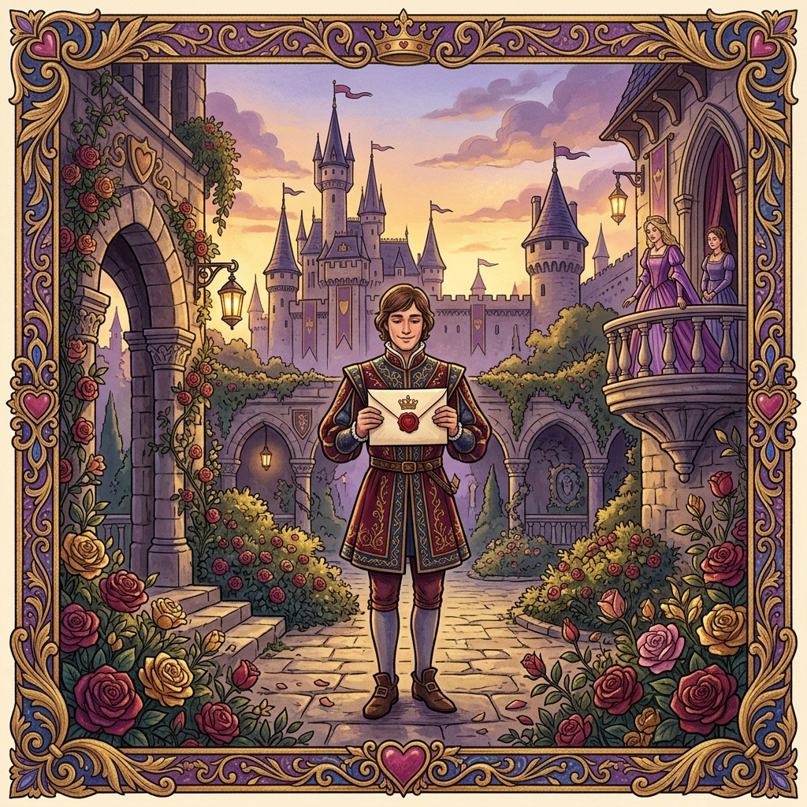
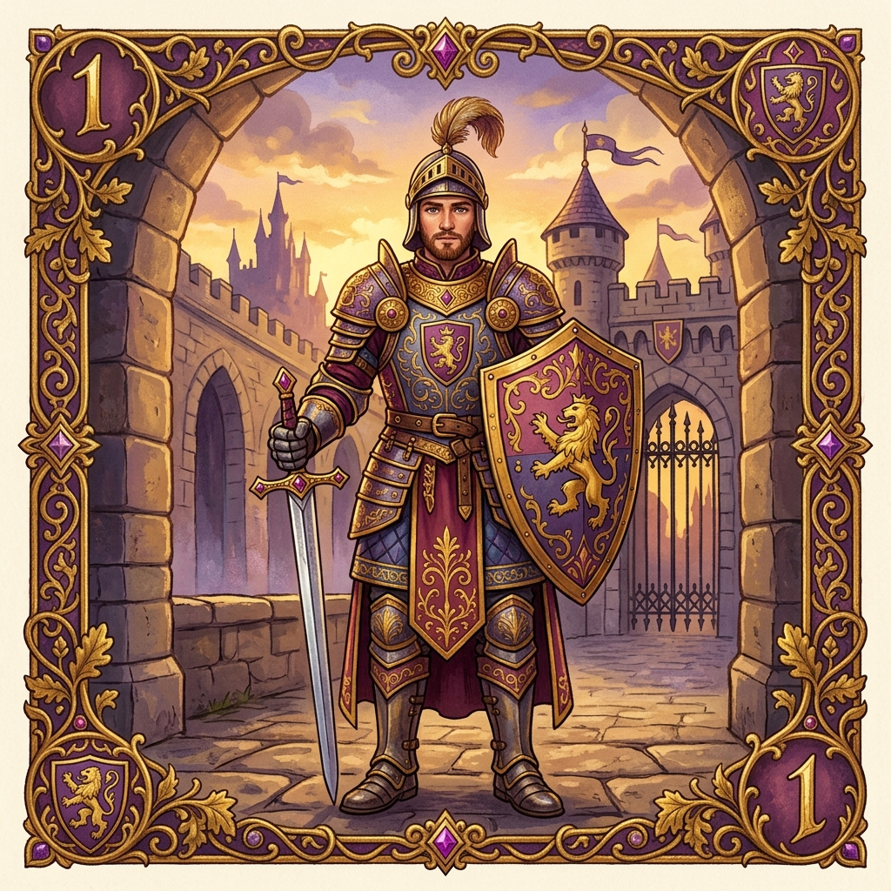
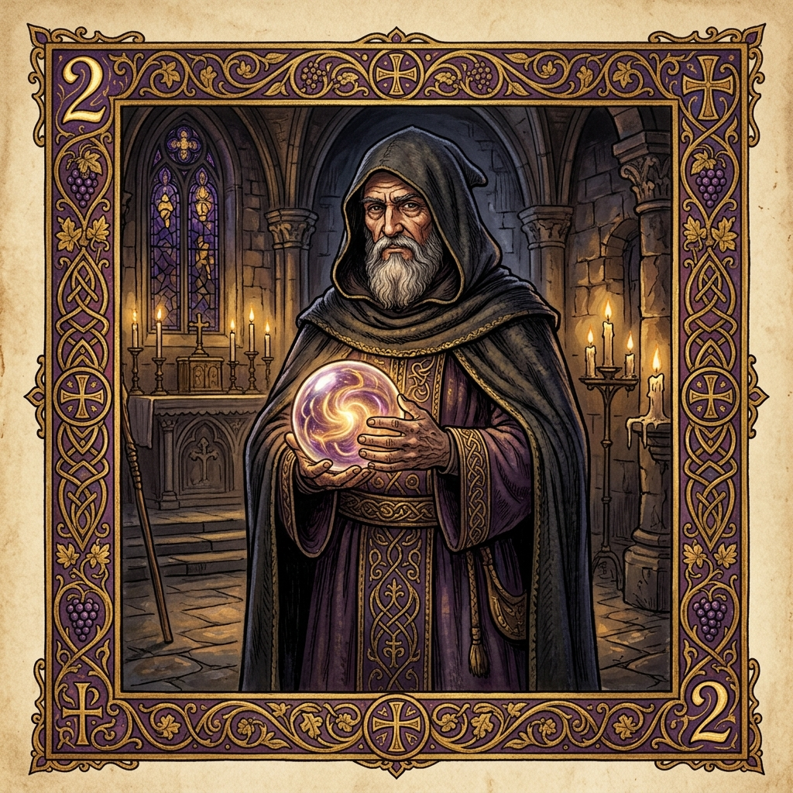
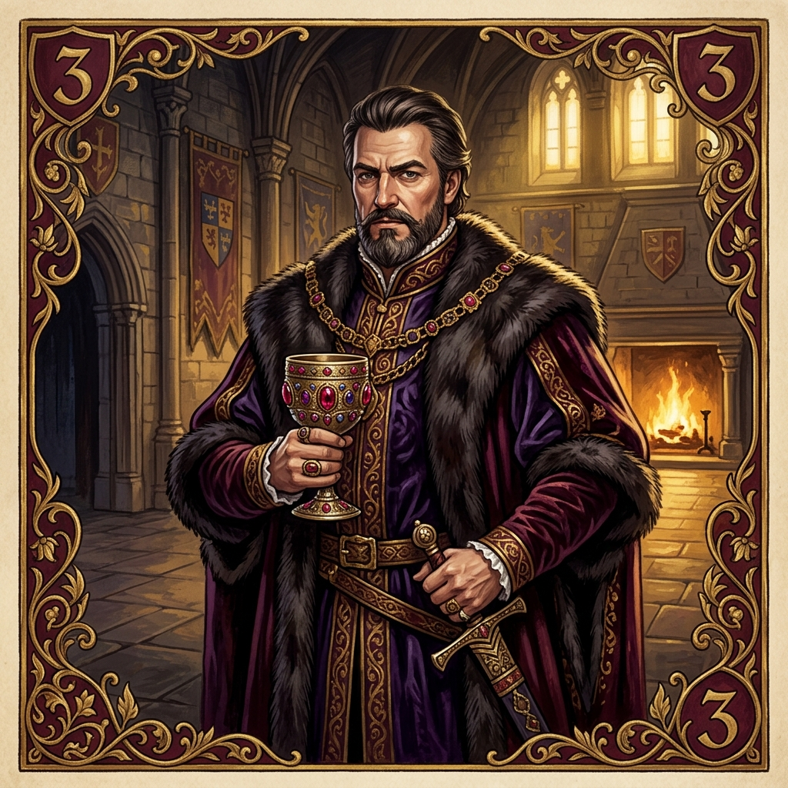
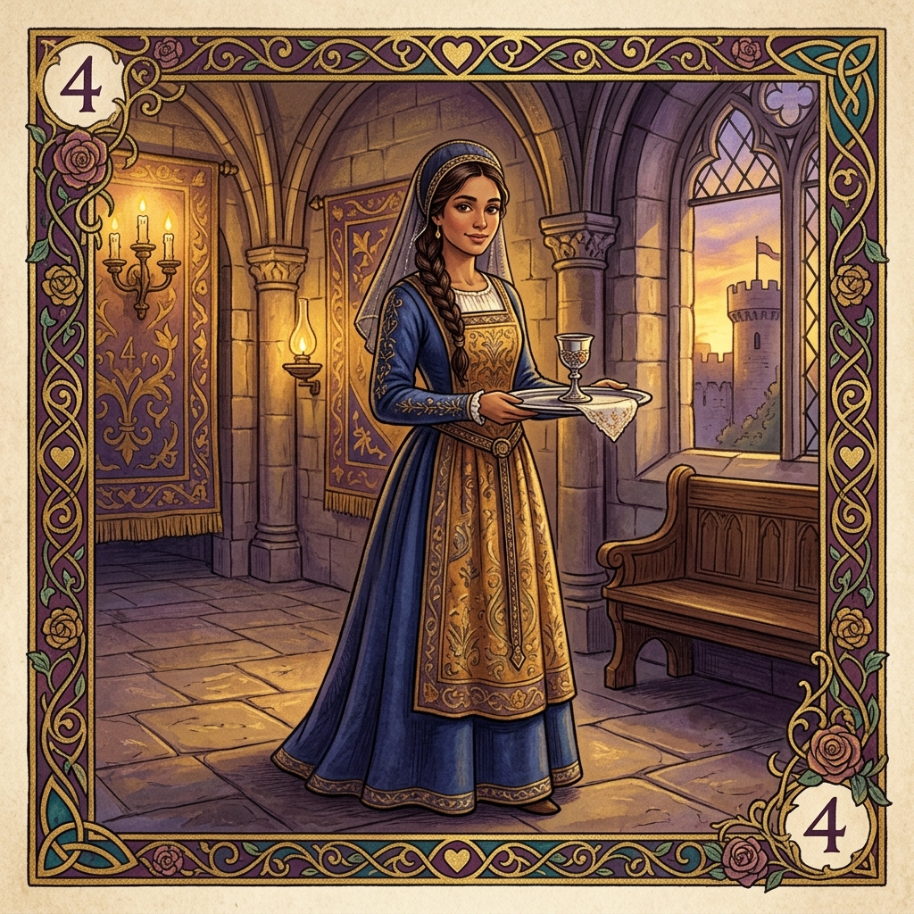
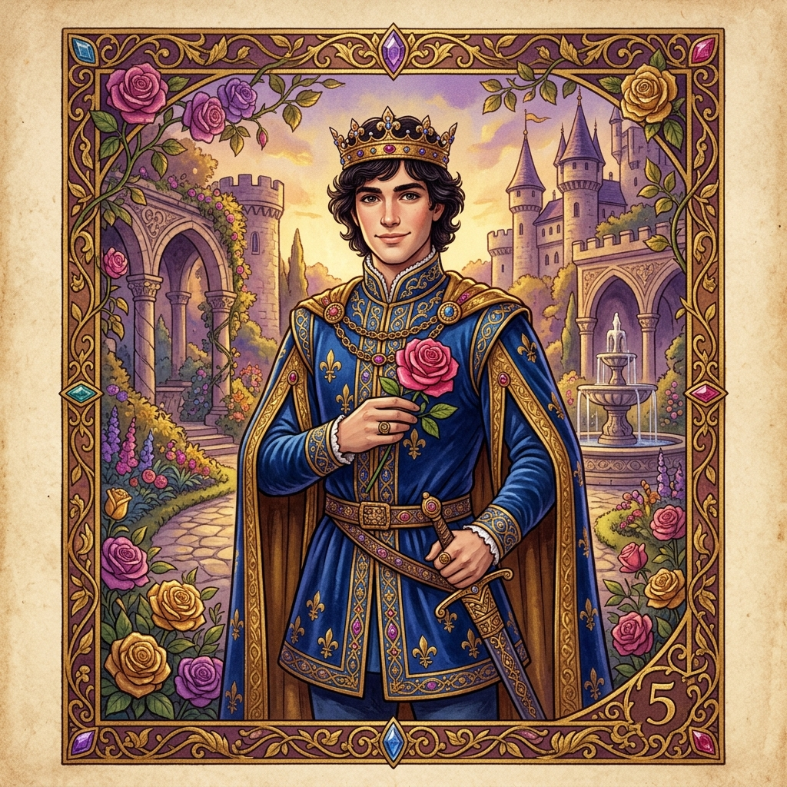
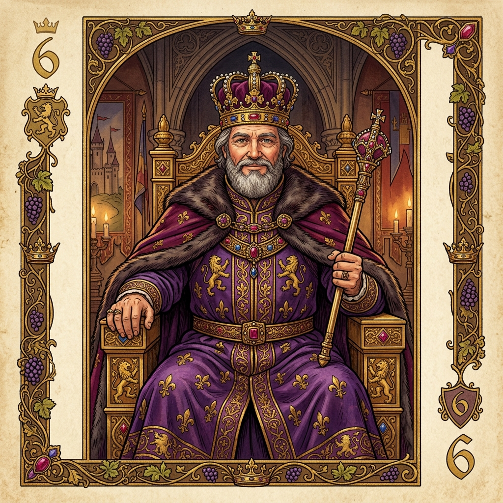
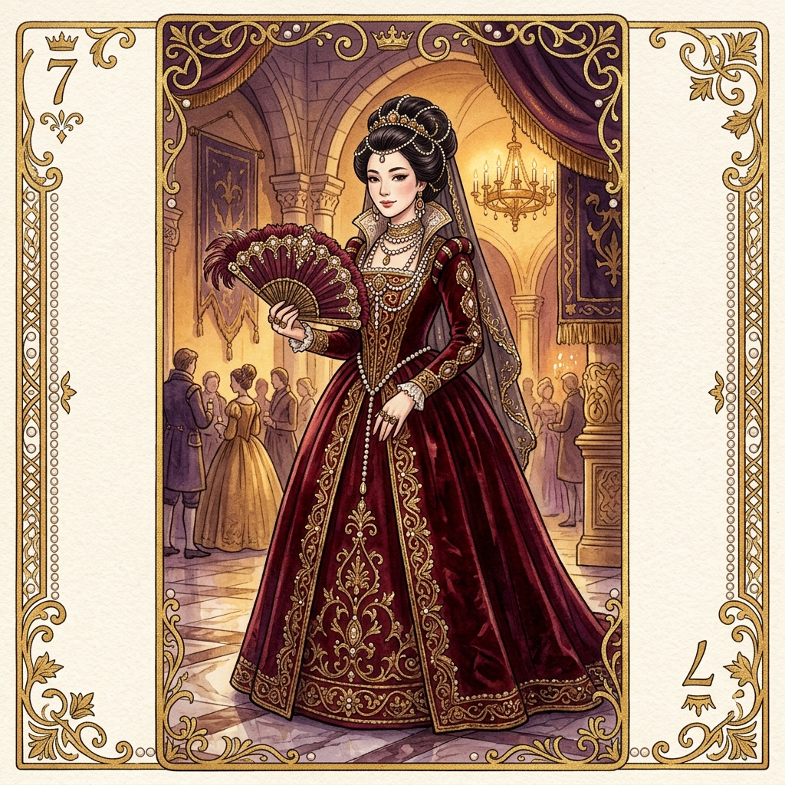

📍 暑假桌遊營隊 ｜ 2-4 人 ｜ 15-20 分鐘
在一個美麗的王國裡，公主被關在城堡的高塔中。
許多追求者都想將自己的情書送到公主手中…
但宮廷中充滿了陰謀與背叛！
🎯 你的目標：想辦法讓你的情書送到公主手中！
淘汰其他追求者，或在回合結束時握有最大數字的牌！
先來認識我們需要什麼
👥 遊戲人數：2 - 4 人 ｜ ⏱ 遊戲時間：每局約 5-10 分鐘
移除的那張牌很重要！沒有人知道它是什麼，所以不可能 100% 猜中所有牌！
認識 8 位宮廷角色
數字越大 = 越接近公主 ｜ 回合結束時數字最大的人獲勝
📊 總共 16 張牌 ｜ 衛兵最多有 5 張，公主只有 1 張！







公主是數字最大的牌（8），比大小時最強！但絕對不能打出去！
被王子逼迫丟牌？也算出局！要小心保護她！
每個回合要做什麼呢？
💡 打出的牌會放在你面前（所有人都看得到），
只剩 1 張牌留在手上繼續遊戲！
以下情況會讓你出局（本輪不能再玩）：
出局的玩家要把手牌翻開讓大家看到，這些資訊對其他玩家的推理很重要！
怎樣才算贏呢？
🏅 獲勝者得到 1 個鍾情指示物（代表公主的一封回信 💌）
洗牌重新開始下一輪！
最終勝利：看遊戲人數決定需要幾個指示物
🧑🤝🧑 2人 → 7個 ｜ 👥 3人 → 5個 ｜ 👨👩👧👦 4人 → 4個
來看看實際怎麼玩！
成為情書高手的小秘訣
新手最常問的問題
現在來玩一局吧！
記住：情書很短很快，輸了沒關係，馬上再來一局！
← → 鍵切換頁面 ｜ ESC 查看全部頁面 ｜ F 全螢幕